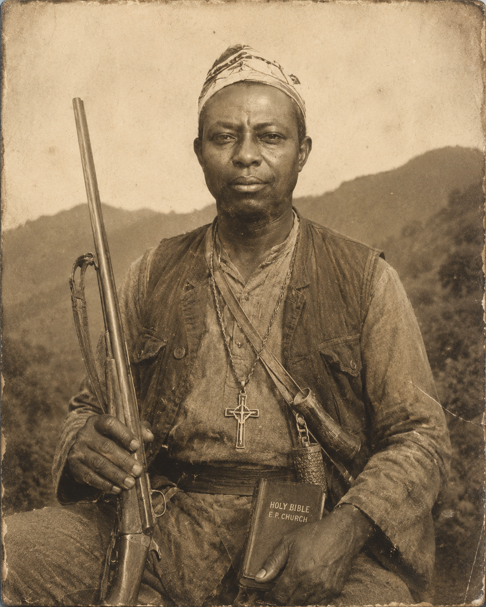
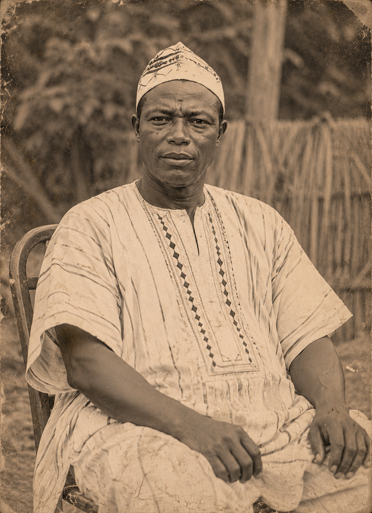
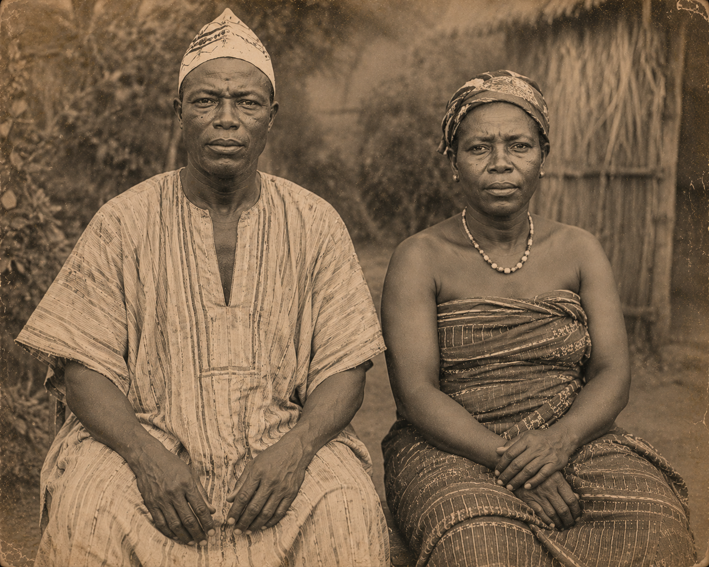

“A Life of Courage, Faith,
Leadership and Legacy”
John Tutu Adeklo (Dordor) was a respected hunter, family patriarch, and the first Presbyter of the Evangelical Presbyterian Church in Hlefi, Ghana. His legacy continues through generations of faith and community development.

Temporal Record
This story is an oral tradition with no current archives to determine his exact age; information will be updated as more records are uncovered.
Archive Status
This is a digital memorial website dedicated to preserving the Adeklo (Dordor) legacy, designed by his grandson Solomon Yaw Adeklo.
Visual Representation
All images of John Tutu Adeklo and his wife Ruth Ehah are AI-generated based on ancestral descriptions and oral narratives.
Early Life and Ancestry
John Tutu Adeklo, also known by his family name Dordor, occupies a revered place in the oral memory of the people of Hlefi. Born into the rugged and demanding environment of the Akwapim–Togo mountain settlements, his formative years were shaped by the relentless demands of strength, endurance, and wisdom.
Growing up in what is now known as the Ho West area of Ghana, within a predominantly rural Ewe setting, John was immersed in a culture deeply connected to the land. This landscape, characterized by dense forests and challenging terrain, required a harmony between man and nature, a balance he mastered from youth.
Life as a Hunter and Community Figure
Prior to the establishment of formal Christianity in Hlefi, John Tutu Adeklo was already a pillar of his village. His exploits as a hunter traversing the vast Akwapim–Togo mountain ranges supplied much-needed resources to families, reinforcing his standing as a courageous and disciplined figure.
Oral traditions recount that alongside his physical prowess, he held a deep reverence for spiritual matters. This respect for the unseen and the sacred laid a natural foundation for his later embrace of Christian teachings. His dual identity as both a fearless hunter and a man of spirituality rendered him a bridge between traditional ways and emerging faith.
Marriage and Family Life
John Tutu Adeklo was united in marriage with Ruth Ehah, a diligent and industrious woman hailing from Todome in the Volta Region. Ruth’s legacy within the family is one of strength and steadfastness, qualities that complemented John’s own character.

Together, they raised seven children, establishing the roots of the Adeklo (Dordor) family lineage. Their home became a crucible of discipline, hard work, and early Christian values, principles that deeply influenced their progeny and set a tone of resilience that echoed through succeeding generations.
Conversion and Rise in the Early Church
The arrival of the Evangelical Presbyterian Church in Hlefi marked a pivotal transition. As one of the earliest converts, his integrity and leadership qualities naturally propelled him to a position of prominence. Celebrating him as the first Presbytery leader (Presbyter), his duties were manifold: supporting missionary catechists, organizing worship gatherings, and encouraging new converts.
His leadership brought stability at a time when Christianity was weaving itself into the tapestry of Ewe cultural life. By ensuring orderly conduct and promoting Christian values, he played a critical part in the church’s ability to endure and flourish.
Character and Remembrance
The oral narratives paint a portrait of a man who was both a disciplined, fearless hunter and a committed early Christian leader. As a respected elder of Hlefi, his counsel and presence commanded esteem. He remains celebrated as a bridge between the ancestral past and a faith-infused future.
Although written records of his later years are sparse, his legacy underpins the spiritual identity of the community and lives on through his progeny.
Legacy Summary
| Role | Description |
|---|---|
| Hunter | Skilled provider and respected figure in mountain settlements. |
| Husband | Married to Ruth Ehah, building a strong family foundation. |
| Father | Patriarch of seven children, establishing the lineage. |
| First Presbyter | Inaugural leader guiding the E.P. Church in Hlefi. |
| Patriarch | Forebear of a lineage including Samuel and Solomon Adeklo. |
Hunter’s Archive
The Digital Museum of Dordor
Legendary Prowess
"His tracking ability was whispered about in villages. He didn't just hunt for meat; he hunted to protect and provide, embodying the spirit of the mountains."

Forest Initiation
Developing instincts as a hunter across the Akwapim–Togo ranges.
Community Provider
Providing meat and resources for Hlefi families during critical seasons.
The Great Pivot
Transitioning leadership skills to support the early Christian mission in Hlefi.

Spiritual Foundation
First Presbyter of Hlefi E.P. Church
Pioneering Faith
As one of the earliest converts, John Tutu Adeklo's integrity and wisdom made him the natural choice for the village's first Presbyter.
Community Pillar
He helped organize worship gatherings and supported missionary activities, bridging traditional life with modern faith.
Family Roots
Together with Ruth Ehah, he raised seven children in a household rooted in discipline, service, and unwavering belief.
Descendants & Legacy Preservation
The Adeklo Lineage

Samuel Yao Adeklo
Carrying forward the rich heritage of his father John Tutu Adeklo, Samuel has preserved the family history and extended its reach through contemporary means.
Visit Website
Solomon Yaw Adeklo
Continuing the legacy of his Grandfather,John Tutu Adeklo as a technology specialist, preserving Hlefi’s history through digital media, tourism, and innovation.
Explore WorkWhispers of Hlefi
Hlefi is a hidden gem tucked within the Togo mountain ranges. Known for its lush forests and rich heritage, it is where tradition and faith walk hand-in-hand.
The mountain air is thick with history—stories of hunters who navigated these heights and the early faithful who established the roots of our community.


Cinematic Archive
A Visual Journey of John Tutu Adeklo